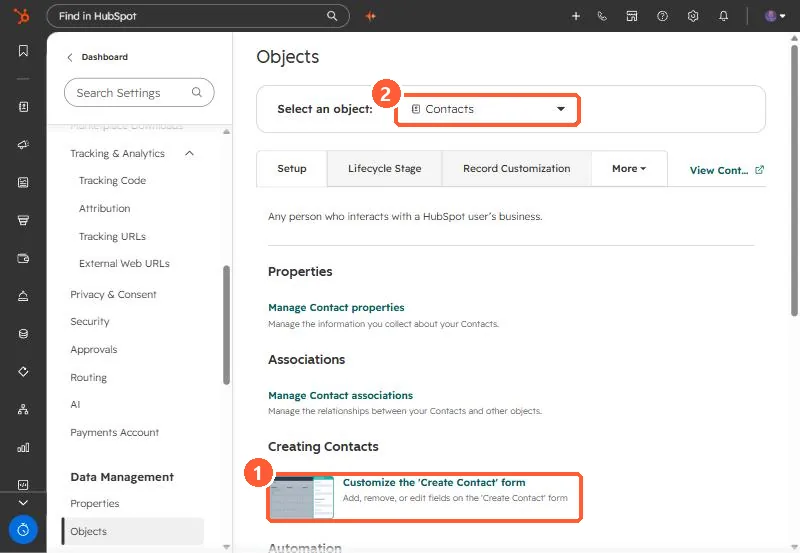

Short answer
Settings, Objects, pick an object, then Customize the 'Create [Object]' form. Add the properties users should see when creating a record by hand, and mark some required. HubSpot's KB says Starter, Professional or Enterprise is needed to make properties and associations required, Professional or above for association labels, and Enterprise to customize the create panel for custom objects. Some properties are always required, such as ticket name, pipeline and status.
1. Where
Go to Settings > Data Management > Objects and select the object. The Setup tab links to the create form.


2. Edit the form
- Search or expand a section in the left sidebar and select properties to add.
- Hover a property and click the required icon to make it required.
- Required associations make reps link a company or deal before saving.
3. Keep it short
Keep required fields to the few that reporting depends on, such as lifecycle stage or deal source. Records created by imports, forms and integrations do not use this form, so validate those separately.